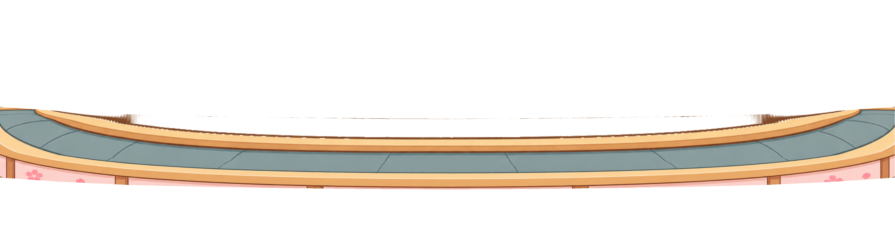
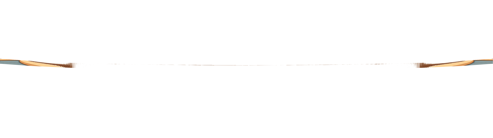
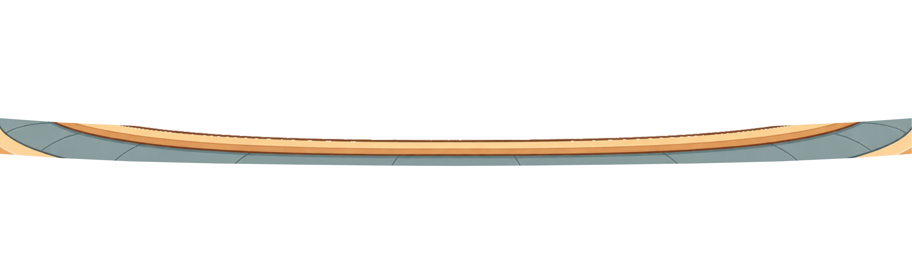
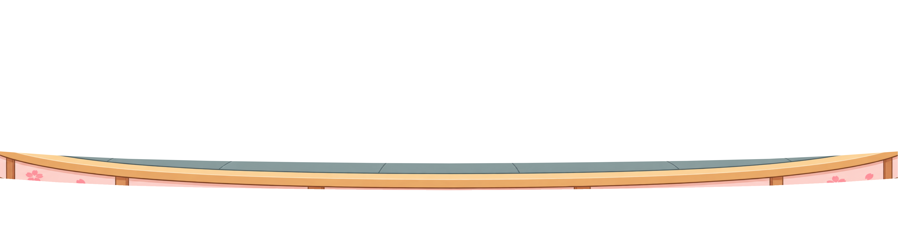

空间结论
大面积遮挡：已解决，中央窗景和店内结构恢复为主体。餐台透视失真：已解决，后沿、带面、前缘使用统一浅弧接触线；中部前缘约 115px，带面约 150px。台面仍会自然遮住窗下沿与柜体下部；正式餐盘加入后仍需做最终接触校验。
THEME V3 · PHASE 03R
重做店内母背景与低矮弧形餐台；调试标记、测试盘和前缘可单独切换。
默认左到右，轨迹与交互热区均为调试原型。





大面积遮挡：已解决，中央窗景和店内结构恢复为主体。餐台透视失真：已解决，后沿、带面、前缘使用统一浅弧接触线；中部前缘约 115px，带面约 150px。台面仍会自然遮住窗下沿与柜体下部；正式餐盘加入后仍需做最终接触校验。
新绘的全景室内插画输出为 3840×1080；没有使用或拉伸原始 2048×768 参考图。母图保留顶部安全区、中央樱花窗景、两侧货架与后厨工作台，不含角色、寿司盘、回转带或业务 UI。
合成层序为母背景、角色预留、餐台后沿、传送带面、调试餐盘、餐台前缘、底部 UI 预留。单层查看及前缘显隐用于检查资产边界；猫咪工位保持空位，没有以几何占位形状伪装角色。
餐台后沿、带面和前缘沿同一浅弧拆分：中心运动线约 y=624px，向两侧平缓收至 y=573px。中部带面约 150px、前挡板约 115px；三层共享曲线，动态盘底部由前缘遮挡。
保留 02R 三栏结构：左四槽购物盘加右侧下单；中央双菜单加 2×2 功能区；右侧下单加四槽购物盘。示意仅为调试覆盖，不会作为正式点餐台素材。